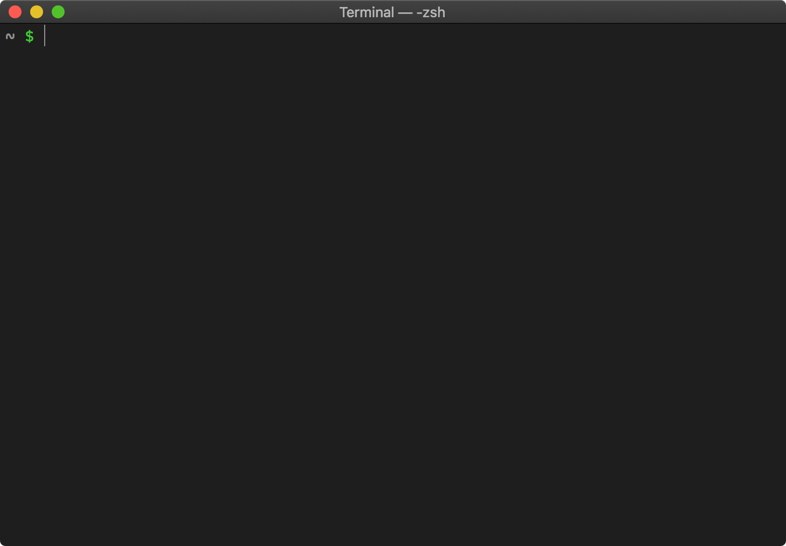
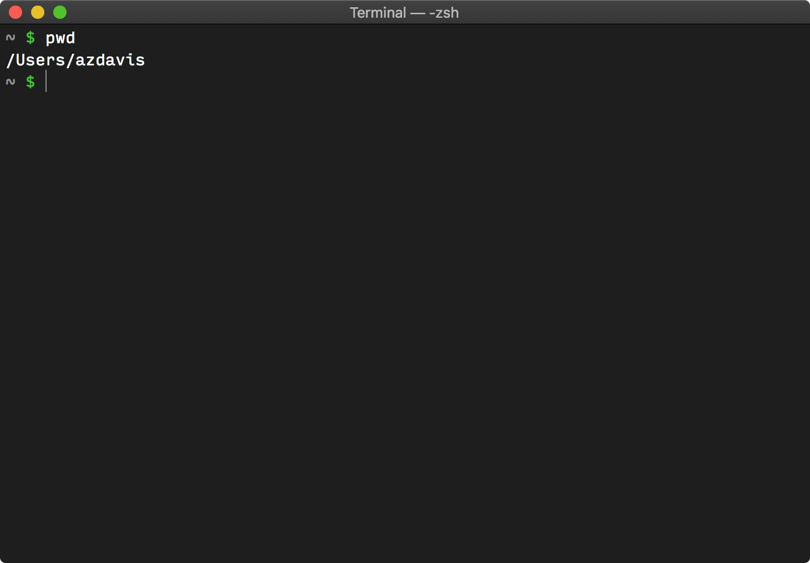
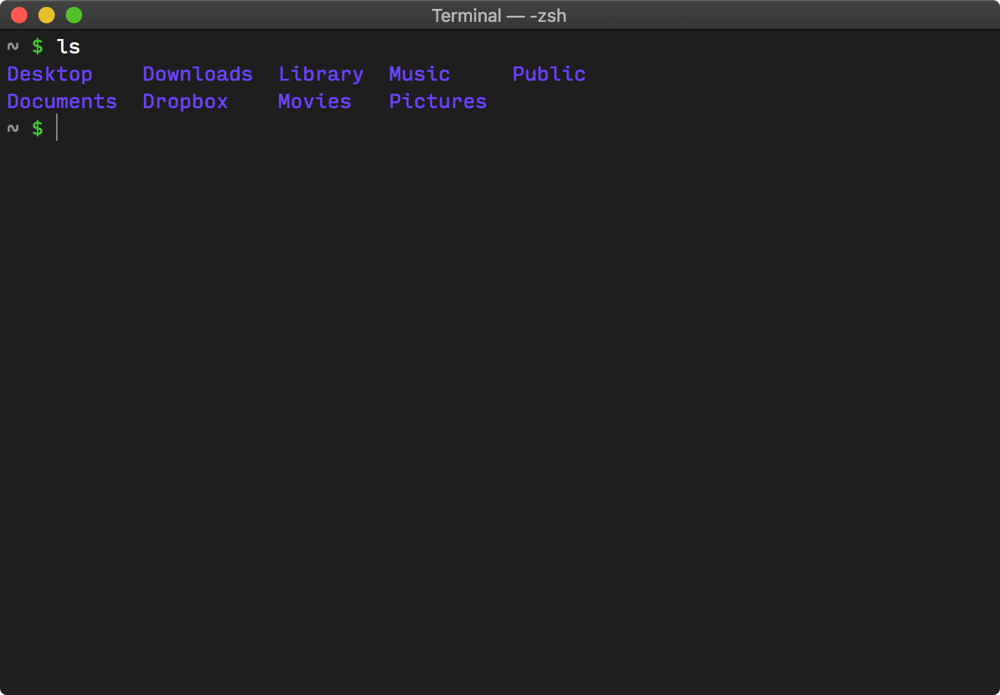
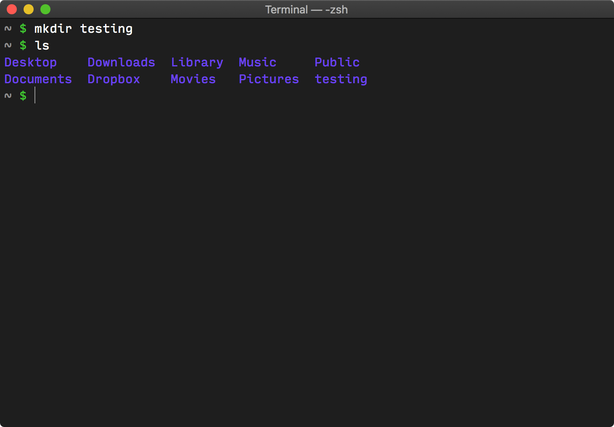
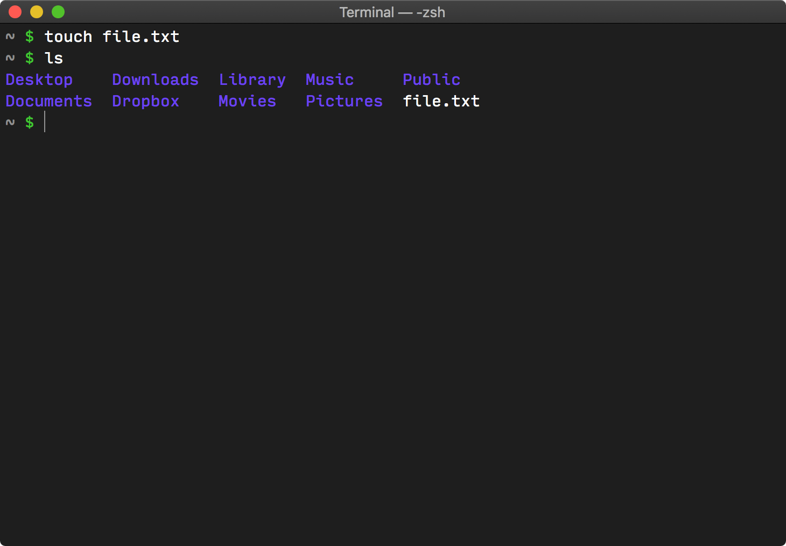
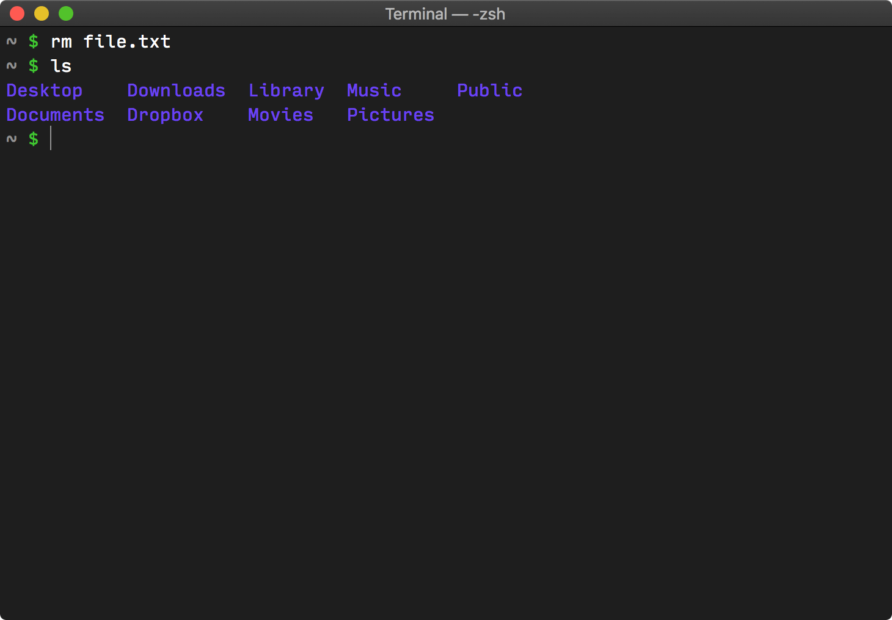
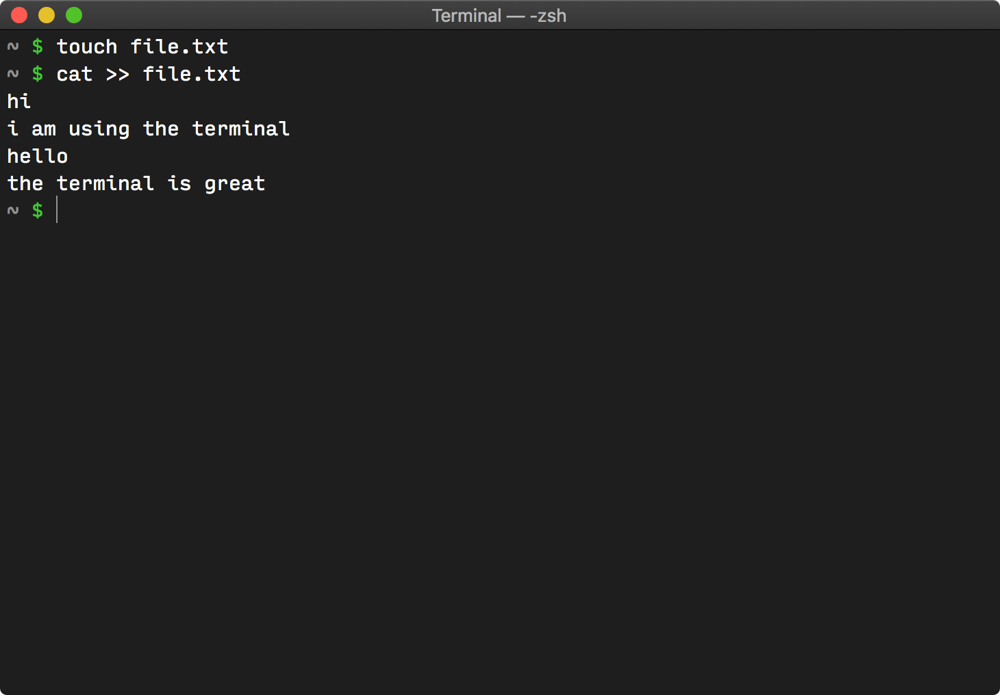
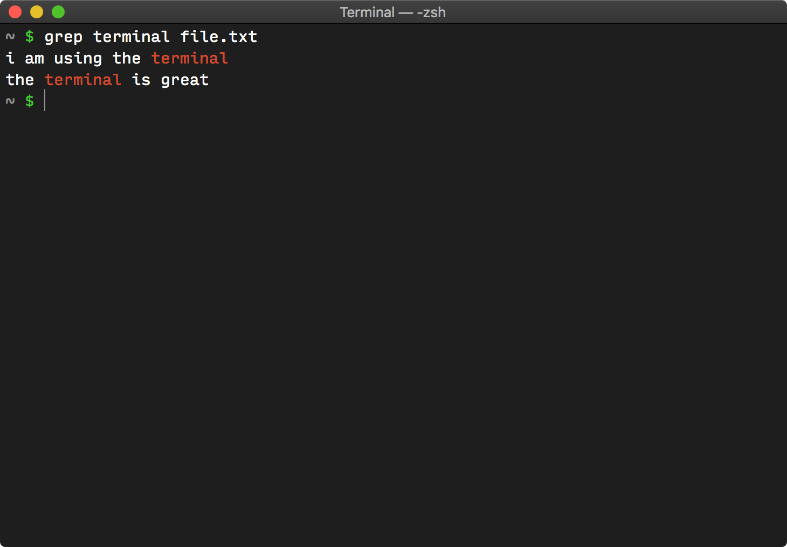

The terminal is a powerful tool that allows users to interact with their computer through simply typing commands. In this guide, you will learn basic terminal commands that you can use to navigate through your filesystem, as well as manipulate objects within your filesystem.
Linux already has the terminal built in, so you can open it by pressing Control-Alt-T on your keyboard.
Mac already has the terminal built in, so you can open it by opening your "Applications" folder, then opening your "Utilities" folder and clicking on "Terminal".
You will need to download and install MobaXterm. It can be downloaded here. Open MobaXterm and start a new session by clicking the "Session" button in the top left corner of the screen. For the session type, select SSH. For the remote host, type your Andrew ID followed by "@unix.andrew.cmu.edu" (It should look like andrewid@unix.andrew.cmu.edu). You will then be prompted to enter your password. Once entered, you will have access to the terminal.
Now that you understand the motivation for these instructions and have gotten your terminal set up, we may introduce some basic terminology and commands with some examples.
Open up your terminal. Note that your cursor should be inside the terminal window, ready for you to type.
The short line of text before the cursor is called the 'prompt'. It often contains information like what user is currently logged in, or what directory you are in. It is usually terminated with the $ character. In the following examples, we will use the $ character on the beginning of a line to indicate the prompt.
Type echo hello and press Enter. The result should look like
this:
Here you have used your first command. The echo command simply prints out what you give it (in this case, 'hello'). The things that you give commands are called 'arguments', so in this case, we would say 'hello' is an argument to the echo command. In general, commands may be given zero or more arguments, separated by spaces.
You will notice that after the command finished, a new prompt (with a new
$) was prepared for you to type your next command.
The next command we will learn is pwd, which stands for 'print working directory' or 'present working directory'. It takes no arguments and prints the path of the working directory. (You may know 'directory' by its street name, 'folder'.) Try it in your terminal.
The ls command lists the contents of a directory. When you give ls no arguments, it lists the contents of the current directory.

You can make new directories with the aptly-named mkdir. Try
mkdir testing. If you see no output, then the directory was
successfully created. But if you see an error message, like
$ mkdir testing mkdir: cannot create directory 'testing': File exists
Then indeed, the directory was not created because something with that name already existed. Try different names until you don't get errors.
Once you're done, you can use ls again and verify that the new directory was created.
You may now change our working directory to that directory. For that, you may use the cd command, where cd stands for 'change directory'. cd (usually) takes 1 argument, the name of the directory you wish to enter.
For instance, if you created the directory 'testing', type
cd testing.
After you cd, use pwd again to show the working directory and note that it has changed. You can also use ls to show the contents of this new directory - but note that the directory is empty, so there's nothing to show.

To change the working directory to the parent directory (the directory that contains the current directory), use:
$ cd ..
We use the cd command as expected to change our current directory, and
.. denotes the parent directory. We can now ls and pwd to see
we're back where we started.
We may remove the directory we created with 'rmdir'. For instance, you may
say rmdir testing.
We now know how to make and remove directories, but what about files?
To create a file, we may use touch.
And to remove a file, we may use rm.
These are the basic commands that you will need to know to navigate your folders. You might be wondering what's the point of terminal if you can do all of these by clicking on your folders. Hold that thought, because terminal is way more powerful than that. It has many more advanced commands that can do very powerful things. We are going to pick a few of those just to show you a glimpse of what you can do.
First, let us make a new file called file.txt. We can do that right from the command line. We can make a new file with touch, as we learned.
But the new file is empty. To add things to the file, type the following:
$ cat >> file.txt hi i am using the terminal hello the terminal is great
Then press Control-D to finish adding things to the file.
The whole thing should look like this:
Next, try typing in 'grep terminal file.txt'.
What the grep command does is that it searches for the string "terminal" in the file, and print out all lines with the string in it. Try it yourself by adding a few more lines to file.txt and run the grep command again. See if the output matches with your expectation!
One thing that you may want to do is to search through all your files for a specific string. Say if you are a student, and you really want to search through all your course notes to find the quadratic formula. But there are 50 chapters of course notes with hundreds of pages in each chapter. What you can do is this:
$ grep -r quadratic .
What the above grep command does is it will look through all the files residing in your current directory, look for the string "quadratic", and print them all out along with the filename. The "-r" flag is used to indicate that you want to search through every single file in your current directory, in every subdirectory, and in every subdirectory of every subdirectory etc. Note that the . refers to the current directory.
The end.